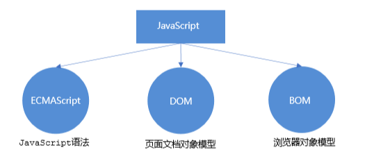

JavaScript
1.初识 JavaScript
1.1 JavaScript 是什么
- JavaScript 是世界上最流行的语言之一，是一种运行在客户端的脚本语言 （Script 是脚本的意思）
- 脚本语言：不需要编译，运行过程中由 js 解释器( js 引擎）逐行来进行解释并执行
1.2 JavaScript 的作用
- 表单动态校验（密码强度检测） （ JS 产生最初的目的 ）
- 网页特效
- 服务端开发(Node.js)
- 桌面程序(Electron)
- App(Cordova)
- 控制硬件-物联网(Ruff)
- 游戏开发(cocos2d-js)
1.3 HTML/CSS/JS 的关系
==HTML/CSS 标记语言–描述类语言==
- HTML 决定网页结构和内容( 决定看到什么 )，相当 于人的身体
- CSS 决定网页呈现给用户的模样( 决定好不好看 )， 相当于给人穿衣服、化妆
==JS 脚本语言–编程类语言==
- 实现业务逻辑和页面控制( 决定功能 )，相当 于人的各种动作
1.4 浏览器执行 JS 简介
浏览器分成两部分：渲染引擎和 JS 引擎
- 渲染引擎：用来解析HTML与CSS，俗称内核，比如 chrome 浏览器的 blink ，老版本的 webkit
- JS 引擎：也称为 JS 解释器。 用来读取网页中的JavaScript代码，对其处理后运行，比如 chrome 浏览器的 V8
浏览器本身并不会执行JS代码，而是通过内置 JavaScript 引擎(解释器) 来执行 JS 代码 。JS 引擎执行代码时逐行解释 每一句源码（转换为机器语言），然后由计算机去执行，所以 JavaScript 语言归为脚本语言，会逐行解释执行。
1.5 JS 的组成

1.6 JS 初体验
JS 有3种书写位置，分别为行内、内嵌和外部。
1.行内式 JS
1 | <input type="button" value="点我试试" onclick="alert('Hello World')" /> |
可以将单行或少量 JS 代码写在HTML标签的事件属性中（以 on 开头的属性），如：onclick
注意单双引号的使用：在HTML中我们推荐使用双引号, JS 中我们推荐使用单引号
可读性差， 在html中编写JS大量代码时，不方便阅读；
引号易错，引号多层嵌套匹配时，非常容易弄混；
特殊情况下使
2.内嵌 JS
1 | <script> |
可以将多行JS代码写到
本博客所有文章除特别声明外，均采用 CC BY-NC-SA 4.0 许可协议。转载请注明来自 Eric！
 wechat
wechat alipay
alipay